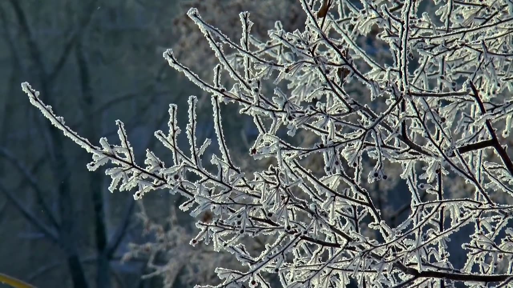

EXTREME WEATHER ROADMAP
Explore Extreme Weather
Extreme weather doesn’t look the same everywhere—or throughout the year. Follow the roadmap to explore examples, see the big climate picture, test what you’ve learned, and apply it to your own region.
1
SEE HOW EXTREMES VARY
Start with two examples
First, look at how extreme weather changes with place and season.
2
3
4
EXPLORE YOUR REGION
Bring it home
Investigate extreme weather where you live using real data, then record what you discover in your Garden Journal.
Go to My Garden Journal →You can return to this roadmap at any time and revisit any section.
📍Summer 2021
DIFFERENT REGIONS
Same summer. Different extremes.
PACIFIC NORTHWEST · JUNE 2021
Extreme heat
A persistent heat dome pushed temperatures far beyond typical early-summer conditions across the Pacific Northwest.
Map: NASA ECOSTRESS land-surface temperature, June 25, 2021. Land-surface temperature is the temperature of the ground—not air temperature.
SAME SEASON+DIFFERENT PLACE=DIFFERENT EXTREME
🔬
CLIMATE LENS
What changes the odds?
Explore the climate connection for the event you selected.

1Warmer averageThe starting point shifts.
→2Hot threshold reached more oftenThe extreme threshold stays fixed.
→3More extreme heatMore days land in the extreme range.
Higher baseline → extreme heat becomes easier to reach.

1Warmer airMoisture capacity increases.
→2More water vapor availableStorms can draw from a larger supply.
→3Heavier downpours possibleWhen the right storm conditions occur.
More atmospheric moisture → heavier precipitation can become more likely or intense.
SAME REGION, DIFFERENT SEASONS
Willamette Valley · 2021
Move through the year to see how the extreme-weather picture changes.
FEBRUARY 2021
Ice storm
Freezing rain coated trees, roads, and power lines with damaging ice.
Climate connection: still being studied for regional ice-storm frequency.
📈Observed regional data
THE BIG PICTURE
What changes across decades?
Choose the same two extremes you explored earlier—now at the regional scale.
NORTHWEST · SUMMER · 1910–2020
How often did extreme heat cover more than half the region?
NOAA's measure: a summer counts here when daytime highs in the top 10% of the historical record affected more than 50% of the Northwest.
FIRST 90 YEARS
3 of 90
≈ 3% of summers
About 1 in 30 summers
→
FINAL 20 YEARS
6 of 20
30% of summers
3 in 10 summers
Extreme heat covered a large share of the Northwest much more often in recent decades.
Data: NOAA Climate Extremes Index. Northwest = Oregon, Washington, and Idaho; summer record 1910–2020. Percentages above are calculated from NOAA's reported counts (3 of the first 90 years; 6 of the final 20 years).
View NOAA's full time-series graph ↗SOUTHEAST · 1958–2021
Are the wettest days delivering more precipitation?
+37%increase
in the amount of precipitation falling on the heaviest 1% of days1958 → 2021
What are the “heaviest 1% of days”?Imagine ranking all days with measurable precipitation from least to most. The wettest 1 out of every 100 precipitation days belongs to this group. The +37% means that, by 2021, the amount of precipitation falling during these exceptionally wet days was 37% greater than it was in 1958. It is a percent change, not a measurement in inches.
The Southeast's most intense precipitation days are contributing more water than they did in the late 1950s.
Data: Fifth National Climate Assessment / NOAA Climate.gov. Southeast regional change in total precipitation falling on the heaviest 1% of days, 1958–2021.
View NOAA's U.S. regional map ↗🧭
YOUR REGION
Now make it local.
Look across time
Explore long-term temperature or precipitation patterns for your state or county.
Open Climate at a Glance ↗📓
NEXT STEP
Record what you found.
Complete the Extreme Weather entry in My Garden Observation Journal.
Open My Garden Observation Journal🧩3 short challenges
TEST YOUR KNOWLEDGE
Build the explanation
Use what you noticed in the activity. For each challenge, choose the evidence that completes the explanation.
123
CHALLENGE 1 · LOCATION
Same summer, different places. What does that reveal?
Build the strongest explanation by selecting two evidence tiles.
My explanation:
Choose two pieces of evidence.
You changed the view.
Location, season, and long-term climate all shape the extreme-weather picture. A single event is weather; patterns across many events and years reveal climate.